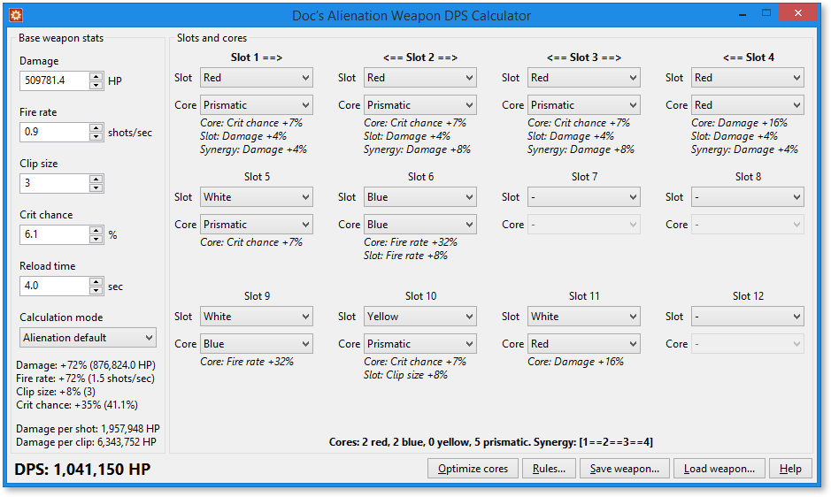

About
Alienation DPS Calculator is a small app designed to let you experiment with your weapon upgrades in the PS4 game Alienation. It allows you to view the stats of your weapon with any combination of cores, and can automatically find the highest DPS core combinations.
Windows, Mac and Linux versions are provided. It should also be buildable for any other platform that Lazarus supports.
Changelog
Version 1.01 (12 Oct 2016)
- Added support for Devastator and Collapser
Version 1.0 (5 Oct 2016)
- Initial release
Discussion thread
Discussion thread is at http://www.housemarqueblog.com/forum/viewtopic.php?f=30&t=1383.